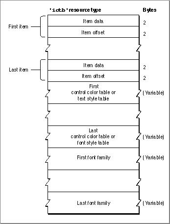
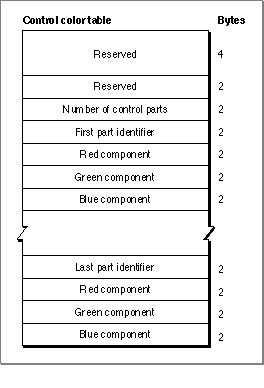
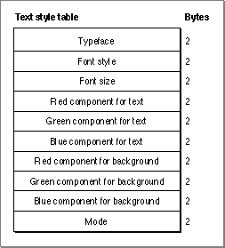

Legacy Document
Important: The information in this document is obsolete and should not be used for new development.
Important: The information in this document is obsolete and should not be used for new development.


The Item Color Table Resource
On color monitors, the Dialog Manager automatically draws the items in your dialog and alert boxes so that they match the colors of the items used by system software in its dialog and alert boxes. The Dialog Manager also uses the default system font when it draws the text in the static text and editable text items of your dialog and alert boxes.If you feel absolutely compelled to use nonstandard fonts and colors, you can use the Dialog Manager to specify your own colors, typeface, font style, and font size.
Your application can specify these by creating an item color table (
- Note
- The Dialog Manager displays the typeface, font style, and font size you specify only on color monitors.

'ictb')resource with the same resource ID as the dialog or alert box's item list resource , and then providing a dialog color table resource for a dialog box or an alert color table resource for an alert box. You don't have to call any new routines to change the colors, typefaces, font styles, or font sizes used in dialog boxes. When you call theGetNewDialogfunction, for example, the Dialog Manager automatically attempts to load an item color table resource with the same resource ID as the item list resource.
Also, be aware that nonstandard colors for items in your dialog and alert boxes may initially confuse your users.
- Note
- To make it easier to localize your application for other script
systems, you should not change the font. Do not use a smaller font,
such as 9-point Geneva; some script systems, such as KanjiTalk,
require 12-point fonts.
If you want to provide an item color table resource for an alert box or a dialog box, you must create an alert color table resource or a dialog color table resource, even if the item color table resource has no actual color information and describes only static text and editable text style changes.
- WARNING
- Because the behavior of color alert and dialog boxes, color items, and color icons is unreliable on computers using system software versions earlier than System 7, do not create these color elements if you wish to maintain backward compatibility.

An item color table resource is a resource of type
'ictb'. All item color table resources must have resource ID numbers greater than 128.There is no Rez template available for creating item color table resources. When
you compile an item color table resource, it should follow the format illustrated in
Figure 6-49.Figure 6-49 Structure of a compiled item color table resource

You define an item color table resource for a dialog box or an alert box by specifying these elements in a resource with the
'ictb' resource type:
The information contained in an element depends on the type of item it describes:
- Items. These consist of a variable number of items, corresponding to those in an item list resource with the same resource ID as this item color table resource.
- Control color tables and text style tables.
- A control color table defines the colors used in a control. Several controls can share the same control color table.
- A text style table defines the font family, font style, font size, and color of text in an editable text item or a static text item. Several editable text and static text items can share the same text style table.
- Optionally, a list of font families. If you use any text style tables, you generally conclude the item color table resource with a list of text strings, each of which specifies a font family. Although you may specify font numbers instead of font names, it's much more reliable to specify names, because system software may renumber these fonts as they are installed and removed. For every editable text item and static text item listed at the top of the item color table resource, specify a font family at the bottom of the resource.
When both the item data and item offset elements are set to 0, then the control or text item is drawn with the default colors, typeface, font size, and font style. Even if only the first few items of the dialog box have color style information, there must be room for all of the items actually in the box (with the item data and item offset elements of the unused entries set to 0).
- Item data. This contains information about how this item is described in the rest of this resource.
- For a control, this is the length (in bytes) of its control color table.
- For a static text item or an editable text item, the bits of this element determine which elements of the text style table to use and are interpreted as follows:
Bit Meaning 0 Change the font family. 1 Change the typeface. 2 Change the font size. 3 Change the font foreground color. 4 Add the font size. 13 Change the font background color. 14 Change the font mode. 15 The font element is an offset to the name.
- Item offset. The number of bytes from the beginning of the resource to either the control color table or the text style table that describes this item.
For controls, the colors are described by a color table identical to a
'cctb'resource used by the Control Manager. Multiple controls can use the same color table. If the resource sets both the item data and the item offset element to 0, then the system's default colors are used for the control. The format of a control color table is illustrated in Figure 6-50.Figure 6-50 Structure of a compiled control color table

A control color table consists of the following elements:
Figure 6-51 shows the format of a text style table.
- Reserved. This should always be set to a value of 0.
- Reserved. Again, should always be set to a value of 0.
- Number of control parts. For standard controls other than scroll bars, this should be set to 3, because a standard control uses only three parts: frame, control body, and text. For scroll bars, this should be set to 12; see the description of the control color table resource in the chapter "Control Manager" for information on specifying the colors for a scroll bar. To create a control that uses other parts, you must create a custom
'CDEF' resource, as described in the chapter "Control Manager" in this book.- Part identifier. This is a value that identifies a part of the first control. The following list shows the values and constants they represent for the standard controls other than scroll bars. For information on the part identifiers for a scroll bar, see the description of the control color table resource in the chapter "The Control Manager" in this book. They can be listed in any order in the control color table.
Constant Value Control part cFrameColor 0 Frame cBodyColor 1 Body cTextColor 2 Text (such as titles) - Red component. This is an integer that represents the intensity of the red component of the color to use when drawing this control part.
- Green component. This is an integer that represents the intensity of the green component of the color to use when drawing this control part.
- Blue component. This is an integer that represents the intensity of the blue component of the color to use when drawing this control part.
- Part identifier, and the red, green, and blue color components for the next control part. Specify color components for every part of this control whose color you want to change. If a part is not listed in the control color table, the Dialog Manager draws it in its default color.
Figure 6-51 Structure of a compiled text style table

The text style table must be 20 bytes long, as shown in Figure 6-51. Multiple editable text and static text items can use the same text style record. To display text in the standard typeface, color, font size, and font style, set the item data and item offset elements for the item to 0. Allocate space for all fields in the text style table, even if they are not used.
A text style table consists of the following elements (see Inside Macintosh: Text for a discussion of font families, font style, and point sizes):
- Typeface. This is the name of the font family to use. If bit 15 in the item data element is set to 1, then this element contains an offset (in bytes) to a font name element at the end of the resource. If bit 0 in the item data element is set to 1, then this element contains the number of a font family. If bit 0 in the item data element is set to 0, this element is set to 0, and the system default font is used.
- Font style. This is the font style to use. If bit 1 in the item data element is set to 1, then this element uses the bits of the low-order byte to describe which styles to apply to the text. If all bits in the low-order byte are set to 0, the plain font style is used. The bit numbers and the styles they represent are
Bit
valueStyle 0 Bold 1 Italic 2 Underline 3 Outline 4 Shadow 5 Condensed 6 Extended - Font size. This is the point size of the font. If bit 2 in the item data element is set to 1, this element contains a value representing a point size. If bit 4 in the item data element is set to 1, this element contains a value to add to the current point size of the text. If bit 0 in the item data element is set to 0, this element is set to 0, and the system font size (12) is used.
- Text red color. If bit 3 in the item data element is set to 1, this element contains an integer that represents the intensity of the red component of the color to use when drawing the text.
- Text green color. If bit 3 in the item data element is set to 1, this element contains an integer that represents the intensity of the green component of the color to use when drawing the text.
- Text blue color. If bit 3 in the item data element is set to 1, this element contains an integer that represents the intensity of the blue component of the color to use when drawing the text.
- Background red color. If bit 13 in the item data element is set to 1, this element contains an integer that represents the intensity of the red component of the color
to use when drawing the background behind the text.- Background green color. If bit 13 in the item data element is set to 1, this element contains an integer that represents the intensity of the green component of the color
to use when drawing the background behind the text.- Background blue color. If bit 13 in the item data element is set to 1, this element contains an integer that represents the intensity of the blue component of the color
to use when drawing the background behind the text.- Mode. If bit 14 in the item data element is set to 1, this element contains an integer that represents how characters are placed in the bit image. The values that the Dialog Manager interprets and the constants that represent them are listed here. See Inside Macintosh: Imaging for a discussion of source transfer modes.
Constant Value scrOr 1 srcXor 2 srcBic 3